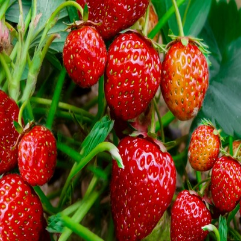

strawberry
Strawberry, (genus Fragaria), genus of more than 20 species of flowering plants in the rose family (Rosaceae) and their edible fruit. Strawberries are native to the temperate regions of the Northern Hemisphere, and cultivated varieties are widely grown throughout the world. The fruits are rich in vitamin C .
Strawberries are low-growing herbaceous plants with a fibrous root system and a crown from which arise basal leaves. The leaves are compound, typically with three leaflets, sawtooth-edged, and usually hairy. The flowers, generally white, rarely reddish, are borne in small clusters on slender stalks arising, like the surface-creeping stems, from the axils of the leaves. As a plant ages, the root system becomes woody, and the “mother” crown sends out runners (e.g., stolons) that touch ground and root, thus enlarging the plant vegetatively. Botanically, the strawberry fruit is considered an “accessory fruit” and is not a true berry. The flesh consists of the greatly enlarged flower receptacle and is embedded with the many true fruits, or achenes, which are popularly called seeds.
The strawberry succeeds in a surprisingly wide range of soils and situations and, compared with other horticultural crops, has a low fertilizer requirement. It is, however, susceptible to drought and requires moisture-retaining soil or irrigation by furrow or sprinkler. Additionally, the plants are susceptible to nematodes and pathogenic soil fungi, and many growers sterilize the soil with chemicals such as methyl bromide prior to planting. Runner plants are planted in early autumn if a crop is required the next year.